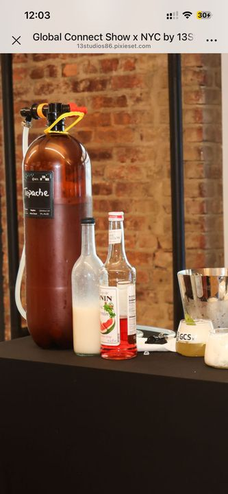
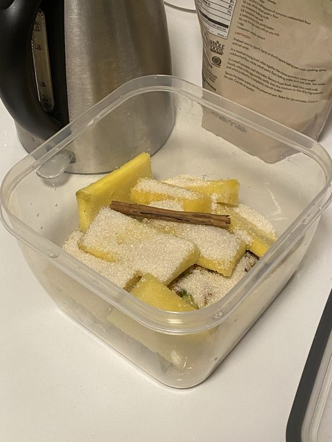
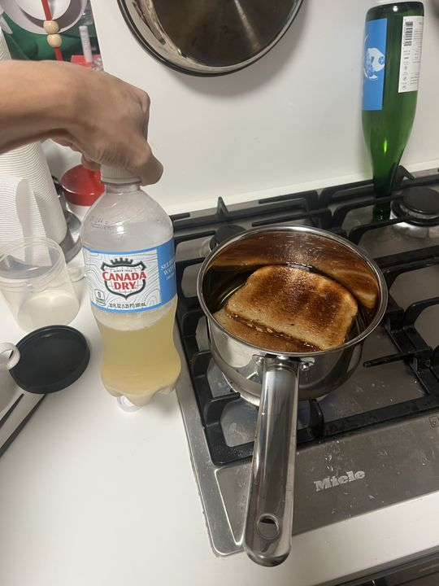
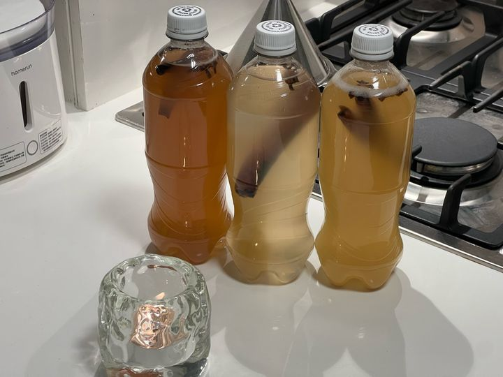
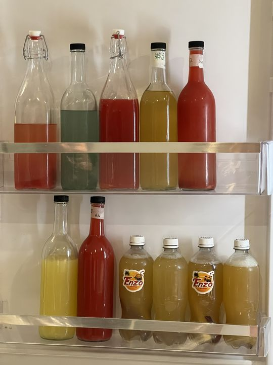
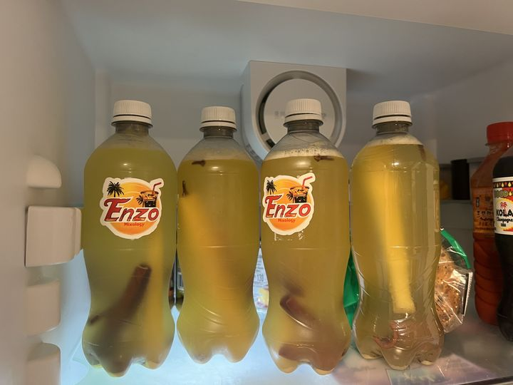

Fermentation lab
Time is an ingredient.
Complete beverages.
Curiosity, allowed to develop.
Influenced by Noma’s fermentation philosophy, Enzo develops fermented drinks that stand on their own. His research brings sensory judgment into conversation with practical beverage production.
| Subject | Notes |
|---|---|
| Tepache | Two expressions. One starting point. A traditional piloncillo version and a lighter expression made with refined cane sugar. Both have been commercially served. |
| Kvass | Grain, season, possibility. Explorations include rye kvass and seasonal pumpkin kvass, developed as beverages in their own right. Meet our kvass ↗ |
| From research to service | Understanding the whole process. Production experience includes beer-industry canning methods, connecting beverage development with real-world service. |
Before the first sip.
All process photographs ↗










